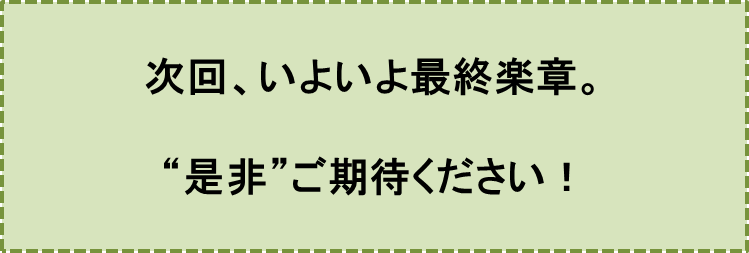

という構図に捉えて、この様子を報道しました。
……この大一番、8月16日午前10時前に始まった滝のように降りそそぐ大雨によって、あっけなく終わりました。
人々は雨空の下（もと）、お祭り騒ぎのような歓迎セレモニーに大忙しという三日間になったのでした。こんな状況の中では、気象庁の予報が全く当たらなかったことに、兎（と）や角（かく）言う人は、勿論、誰一人いませんでした。
―――― ・ ―――― ・ ―――― ・ ――――
こんなお祭り騒ぎの余韻が残っている東京を後にして、私達が、凱旋将軍のような思いで京都に帰ったその日の夕刊の記事に、私は目を奪われました。
「気象台 vs. 雨男の世紀の決戦」に全く無関心な姿勢を通していたある新聞社が、次のような記事を大々的に載せたのです。
この記事を少し詳しく読むと
“日本全体が高気圧でおおわれている状況の中、従来の気象データ、現在の観測技術では、とても予測できない超ミニ低気圧が東京湾沖に突如発生し、この低気圧が猛烈な勢力に急速に発達し、大雨をもたらしながら、非常にゆっくり北上したことが、今回の記録的豪雨の原因”
とありました。
三日間、都内を有頂天にした数々のイベントの余韻は、この記事によって、急速にクールダウンしました。今夏の大雨には、“科学的根拠”があったわけですから。
もはや、「気象台 vs. 雨男、世紀の決戦」の結果について、あれこれ言う人は、誰一人いませんでした。テレビでとりあげられることもありませんでしたし、新聞にもその後、一行の記事すら載りませんでした。
ただし、あのセンセーショナルな記事を載せた新聞社が、私には到底理解することが出来ない、大先生方による哲学的な内容のお話を記事にしました。
ある先生は、
“宇宙には何か、つまり人智の到底及ばぬ、何か、が存在し、この世はこの何かによって動かされている。それ故、この勝負結果について、何のかんのと言うことは厳に慎まねばならない”
というお考えを述べられました。
また、「気象学」のある大先生は、
“『現代気象学』は極めて未熟な段階にある。
けれど、将来の進歩、特に技術的進歩によって、あらゆる気象現象を100パーセント正確に予測できる時代が必ずくる。
集中豪雨や竜巻の発生時間を秒単位、発生位置をメートル単位で正確に予報できるどころか、
「あなたが、明後日の日曜日の午前7時丁度に、寝室の東側の窓を開ければ、心地よい摂氏21度の微風が、あなたの頬をやさしく撫でるでしょう」
といった現在では想像もできないレベルの予報が日常茶飯のこととなる”
という意味のお考えを述べられました。
私には、残念なことに、よく理解できないお考えです。
しかし、事前に、“気象台 vs. 雨男”と声高に叫んで、世の中にその結果を心待ちする雰囲気づくりをすることは、マスコミの姿勢としては認められるかもしれないけれど、この勝負の結果について兎や角言うことは、厳に慎まねばならないという点については、なんとなく分かるような気がしました。
世の中はすっかりクールダウンし、雨男はその後、全く忘れられた存在となりました。
―――― ・ ―――― ・ ―――― ・ ――――
人々の脳裏に再び雨男の姿が甦ってきたのは、5月末から始まり、6月いっぱい続いた異常気象によるものでした。5月末以来、一ヶ月以上降雨ゼロという状態が、三年目の夏も続いたのです。
7月に入ると水道管からは、いくら蛇口を開いても、心細い水が少しづつ流れ落ちてくるだけになりました。多くの人達が、雨男が来ることを熱望するようになりました。
その後に起こったことは、二年目の夏と全く同じでした。
“天田さんが、今年もまた8月16日に上京します。そして3日間、都内に滞在します。この訪問によって東京を中心とする関東の水不足は解決されます”
という内容の手紙を去年と同じシナリオ、つまり普通の封書そして内容証明付き封書で出すというシーンも忠実に実行されました。
それで、お話を一気に短絡させて、「のぞみ306号」が、東京駅プラットフォームに定刻通りに滑り込んだときの状況からお話しします。
あぁ、今夏はどうしたことでしょう。一滴の雨ももたらされませんでした。
「のぞみ306号」は、干天にあえぐ東京駅プラットフォームに滑り込んだのです！
朝早くからプラットフォーム上に集り、手に手に旗を持って待っていた人達は、拍子抜けの状況となりました。
出迎えの人達は一人、二人とプラットフォームから去っていき、駅員さん達が、赤い絨毯の“VIP用即席通路”の撤去作業に、大忙しでした。
それでも佐田君だけは
「ようこそいらっしゃいました」
と丁寧に挨拶をしてくれましたので、私は内心ほっとしました。
「ホテルも食事もいつものように用意していますから、ご案内しましょう」
という佐田君の声に誘われて、私達はホテルに到着しました。案内されたのは去年通り、このホテルでは最高クラスの個室食堂でした。雨が降らなかったからといって、態度を急変させないホテルの姿勢を有難く思いました。
この日の昼食のテーブル、そして夕食のテーブルも、やはりいつもと同じで二種類のサンドイッチと沢山の小さなコップに注（つ）がれたお水達でした。
期待外れの状況の中でも、昨夏同様、私達は楽しく会話を交わしていました。相変わらずコップの水を次から次へと空けていく天田さんの姿を、改めて眺めていました。
どんな状況の中でも自己のペースを変えず、懸命に雨男としての力を誇示するかのような姿に、何か胸を打たれるような気がしました。
佐田君が私につぶやくように言いました。
「一泊100万円〜200万円という豪華客室に、外国からの大富豪が、この時期でも宿泊し、何の不自由もなくシャワーやお風呂を楽しんでいるんだ……。
一泊1〜2万円の一般客にはお風呂の使用は無理となっており、蛇口は早くからロックされているそうだ……。
そのかわりにこういった一般のお客さんには身体を拭くためのおしぼりが、一日、数個供給されているような状況ってことだよ。
外国からの大富豪は、大きなお風呂に存分に温水を満たして、一日の仕事の疲れをとっているというのにね……」
私達は“ふう”と大きく溜息をつきました。
せっかく準備されていた二日目、三日目のパレードは、キャンセルされました。
こんな状況の中でも、私達は、“大雨”を期待してホテルに滞在していました。
二日目も、このホテルでは最高クラスと思われる豪華な食堂で、三度の食事をすることができました。
私達三人が、昨年、一昨年の“真夏のヒーロ”であったことを忘れない、ホテルのご厚意に、深い感謝の気持ちを抱きながら、私達は食事をしていました。
食事は相変わらず大皿に山盛りされた二種類のサンドイッチとコップのお水でした。
……しかし、サンドイッチの量は変わりませんでしたけれど、コップに注がれている水の量が、半分以下になっただけでなく、コップの数が、食事ごとに目に見えて減っていきました。
二日目の夕食が済んだとき、ホテルの支配人が申し訳なさそうな顔で部屋に入ってきて、
「……実は僅かに残っていた非常用のミネラルウォータも底をつきました。申し訳ありません。これ以上、お水を提供することは、もはやできません」
と切り出したのです。
佐田君は、しばらく天井を見上げたままでしたが、一大決心をしたとばかりに、口を開きました。
佐田君と支配人の間での切迫した会話を紹介しましょう。
佐田君
「全くの噂ですが、このホテルでは外国からの大富豪に対しては、一泊100〜200万円のスーパー・デラックス・スーツを用意しているということですね。
しかも昨夏ぐらいでしょうか、異常気象で極端な水不足の期間に限ってということですが、一泊200〜300万というとんでもない宿泊費をとっているそうですね。勿論、こういったお客さんには、水不足を感じさせないようにしているためでしょうが……」
支配人
「（シーン……）」
佐田君
「高価な宿泊費をとっているかわりに、シャワーは勿論、バスタブにもたっぷり水を満たして身体を休めてもらっている……。一日何回でも楽しんでもらっているのではありませんか。
一般の客室の水道の蛇口は、固くロックされているという状況の中でですよ」
支配人
「（シーン……）」
佐田君
「大富豪さん用のお水を、少しだけでもまわしてもらえないでしょうか」
支配人
「……ウーン、明日の朝食、昼食では何んとか無理をしてみます。でもトータル5杯ぐらいが限界です……」
佐田君
「（シーン……）」
支配人は、すっかり説得できたものと考えたのでしょう。うつむきながら食堂を後にしようとしました。
その背中を追っかけるように、佐田君は、支配人に厳しい口調で、言葉を投げかけました。
佐田君
「それならVIPさん達が使ったシャワーやお風呂の水の貯め置きがあるでしょう。それでも我慢しますから持ってきてください。勿論、簡単なものでよいですから、濾過器には、通してほしいですよ……」
支配人
「……申し訳ないですが、使用水でも比較的新しいものは全て、VIP用のトイレの洗浄に使っています。一年ぐらい前に、恒久的な配管がされていますので、おまわしできません」
佐田君
「（シーン……）」
支配人
「昨夏、急造した一階の一般宿泊客用公衆トイレの洗浄には、古い使用水を使っています。申し訳ないですが異臭を放っており、とても飲めるお水ではありません」
もう佐田君は無言のままでした。
二日間、期待していた雨は全く降らず、肩を落として着いた夕食のテーブルの席に、またも支配人が入ってきて、思いがけない言葉を投げかけました。
「すみません。……このお部屋、実は明日の朝から、VIPの食事のために使わせていただきたいのです。そのかわりに一階に急造の食堂を準備させていただいております。
倉庫として、長年使用していた部屋なので、お気に召さないかもしれませんが、あなた方には個室の方がよいかなと思いまして」
私達は無言のままでした。支配人は続けました。
「……と、申しますのも、７月に入って一般宿泊客の食事ではビール、ワイン等のアルコール類、新鮮な果物のしぼりたてジュースのみを提供させていただいています。かなり高くつくのですが。
しかし、お水はいくらお金を払ってもらっても、サービスさせていただける状況ではないのです。お水に途方もない値段がついてしまっている現状を理解していただきたいです。
こんな中では、たった数杯のお水であっても、沢山の人達と一緒の食堂で、天田様だけにサービスさせていただくことはできません。
この状況を、是非、ご理解いただきたいです。申し訳ありません」
私達はやはり無言のままでした。
三日目の朝食の場所は、支配人の話した通り、一階にある急造の食堂でした。
ホテルの裏口近くにあって、如何にも倉庫だったらしく、中は薄暗く、天井に、今時珍しい裸電球が、一つぶら下がっていました。
部屋全体が少しカビ臭く、昨日までの食堂とは比べようもありません。
そんな部屋であっても、朝食、昼食として用意されたサンドイッチを、高校時代の楽しい思い出を語り合ったりしながら、口にしました。
天田さんは、たった一杯となってしまったコップの水を、非常にゆっくり口に含ませながら飲んでいました。
奇跡的な雨を期待していた私達は、三日間ホテルに滞在していました。時折、外に出て大空を見上げ、そしてため息をついていました。
大空には、雨どころか、雲一つ浮かばなかったのです。
いよいよ、このホテルでの最後の晩餐となりました。夕食のテーブルに並んでいたのは、普段通りの山盛りのサンドイッチだけで、コップのお水は、もはやテーブルのどこにも見当たりませんでした。
♪♪♪♪コーヒーブレイク♪♪♪♪
